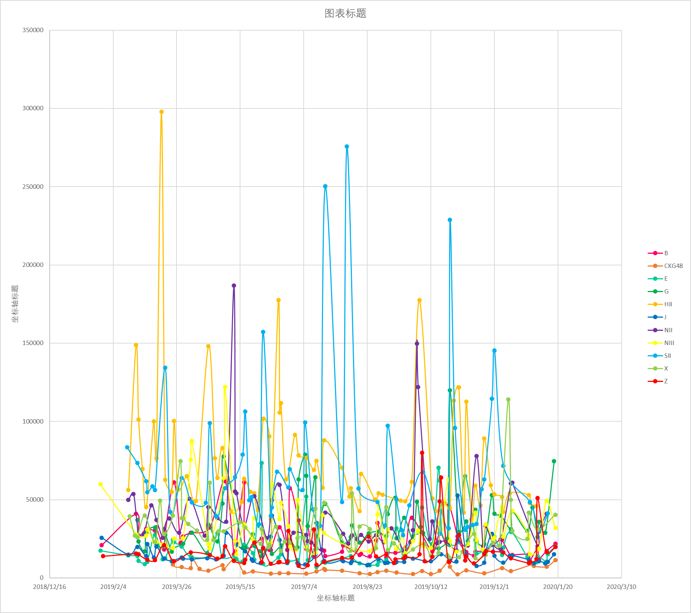

时段4：20190119-20200118

19年的大重组拆散了两个分团和一支队伍，给除了NIII以外的所有队伍都带来了不同程度的影响。
吸收了不少重庆成员的银河战舰进化成了完成体，朝气蓬勃，稳居最大流量。
老菜皮还齐的S队推众多，也是一片大好风光。
还没恢复过来的恩、依然元气满满的叉、加入重庆成员后顺利变身小学G的提姆居、前半年还没碎后半年w妈与zjg三方打架的恩穗都是流量第三梯队。
又一次在退团潮中的悠唐被中泰甩开，B勉强维持着一份荣光，经常凑不齐16人的E直线flop，与磕研所起家的Z、乐白到来后有所起势的勾进入了同一梯队。
死而复生的西开机依然没有流量，独自一队在播放量统计的底部。
值得注意的是，19年也是选秀入河新粉补档的首选年份，收获红利最多的SH两队以及中泰的播放量在过去一年应该都有不少增长，不一定能准确反映当时的讨论度。